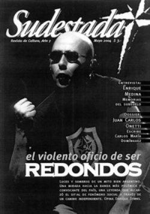

Buscar
Fútbol de ascenso ¿Y de primera, de quién sos?
Edición N° 28
Mayo 2004
Revista bimensual
Comprar edición impresaSumario
- Redondos: Cadáver exquisito
- La derecha afila las garras
- Pintores de Chiapas
- Enrique Medina: Memorias del subsuelo
- El trueno en la voz: Acerca de algunas letras del folclore
- Fútbol de ascenso ¿Y de primera, de quién sos?
- Osvaldo Bayer en Lomas de Zamora: Prohibido Olvidar
Compartir Articulo
Dedicado a Gabriel Chepenekas
El fútbol de ascenso representa el eterno juego de los que sueñan. Todo se contrapone en el fútbol de los sábados; estadios colmados de público y reductos semi-vacíos, jugadores habilidosos junto a expertos en zancadillas, caños, codazos, tacos y patadas voladoras.
En estas escasas características que acabamos de enunciar no encontramos diferencia alguna con el fútbol de los domingos, perdón, de los viernes o de los lunes o de vaya a saber cuando quiera la bendita televisión, pero sí las encontramos cuando miramos un poco más allá o mejor dicho un poco más acá.
Viejos vestuarios con ventanas rotas donde se filtra el frío crudo del invierno rioplatense, que hace que a más de uno le cueste respirar. Se imaginan lo difícil que es ser jugador del ascenso durante el mes de julio, la helada ducha invita a la enfermedad fácil, ni pensar en febrero, cuando la chapa del pequeño recinto hierve, quema, y no solamente la piel, también el alma. Los sábados -en muchos casos- las camisetas no tienen publicidad, son opacas y se transpiran igual o más que en primera. Pero aquí está lo curioso. En el ascenso, cuando los equipos ingresan al campo de juego, la indumentaria adquiere un brillo especial, lo que podría traducirse como el cintilar de la dignidad. El salir a jugar para diez, veinte o cien personas. El vivir el segundo de gloria más largo que jamás nadie vivió. El sentir la emoción de los dos momentos sublimes que tiene este deporte, el ingreso al campo y el gol. Pero en el ascenso, el éxtasis que producen estas situaciones se vive de manera diferente.
No es sólo ingresar al campo de juego y regocijarse con el apoyo de la gente; no es sólo treparse al alambrado y mezclar aliento con aliento con el espectador; es encontrar en cada rostro desencajado de una felicidad ambivalente, una mirada llena de ilusión y tristeza. No hay duda, es el fútbol de los goleadores (de veinte o treinta tantos por temporada) que siguen viviendo en la misma casita de siempre y toman el colectivo en la esquina de años.
Es el fútbol sabatino, con figuras de partidos que no reciben botines de oro, con ilusionistas a los que nunca jamás ningún cronista los entrevistará luego del encuentro. Hasta los medios masivos le pierden el respeto a los de abajo, publicando nombres inexistentes o armando formaciones con jugadores suspendidos u olvidándose de publicar la síntesis de algún partido. Claro, no es lo mismo publicar Tevez de Boca con "b" sin que pase desapercibido que hacerlo con cualquier jugador del ascenso. Se darán cuenta del daño que le provocan al jugador y al hincha cuando el domingo por la mañana se levantan ansiosos sólo para ver publicados los nombres de quienes conforman el equipo del barrio. Los jugadores de ascenso son los eternos olvidados, pero también son los primeros en solidarizarse cuando Futbolistas Argentinos Agremiados -sindicato de jugadores- propone una medida de fuerza y se pliegan junto a los de primera, a pesar de vivir dos realidades diferentes. En muchos casos, los jugadores del ascenso necesitan operarse por las mismas lesiones que los de primera, y no pueden hacerlo porque sus clubes no tienen los aportes económicos necesarios y quedan marginados con su carrera en el anonimato.
Gajes del oficio
Quien recordará el día de mañana a Luis Dotta, aquel exquisito volante central de Centro Español, que fue titular indiscutible durante quince temporadas y que, entrenamiento de por medio, cumplía fervorosamente sus tareas como barrendero por las calles de Haedo. Quien recordará a Miguel Mendoza, ese mediocampista por derecha que tenía un ida y vuelta espectacular y que brillara en Deportivo Merlo y se ganara la vida botelleando al borde de la Av. General Paz y que a mediados del año pasado fuera noticia porque lo quisieron involucrar en un asalto a una ferreteria. Quién recordará al uruguayo Díaz Maidana, un número cinco como los de antes, con temperamento y presencia en la línea media, que jugaba en Sportivo Barracas y hace algunos años atrás cayera víctima de las balas de "la mejor policía del mundo". Y aquel número ocho
que jugaba en Liniers de apellido Cabañas y que los sábados era un velocista profesional por el sendero derecho del campo perimetral y durante la semana se ganaba la vida "trabajando" como "lisiado" por las calles de Villegas -una de las zonas más pesadas de La Matanza-. Y aquel gran goleador que se llamaba José Luis "Pipi" Correa, de Atletico Lugano y que luego pasó a Independiente y llegó a jugar la Copa Libertadores para después perderse en algún barrio de los suburbios de Claypole. Sobre Correa, Ricardo Enrique Bochini dijo en alguna oportunidad: "Fue el jugador de mayor talento que vi en mi vida". O el caso de Darío Dubois, gran marcador central de Yupanqui y Victoriano Arenas entre otros, que subía a los trenes para vender sahumerios y así ganarse la vida. De este último se recuerda una gran anécdota: era la época en que algunas "estrellitas" del fútbol de primera, haciendo gala de su falso amor por el equipo del barrio y con más ansias de algún posible negocio detrás, llegaban a los clubes de primera "C" y se apoderaban de un protagonismo que no les pertenecía. Ante la pregunta sobre que le parecía todo ese circo, Dubois contestó: "Me encantaría alguna vez poder enfrentar a alguno, así, en el medio del partido le puedo dar una trompada en la cara, que es lo que se merecen. Porque yo, dentro de los límites del campo de juego, tengo conciencia política". La mayoría de los jugadores del ascenso, pero por sobre todo los de la "C" y la "D" tienen que salir a trabajar todos los días para poder comer.
Por otra parte en "la tele", es frecuente que los periodistas "depor-divos" se burlen con desprecio del ascenso. Algunos años atrás, en una transmisión televisiva del clásico entre Paltense y Argentinos Jrs., promediando el segundo tiempo del encuentro y ante un remate de Carlos Moreno que tuvo como destino la tribuna, un comentarista perteneciente a la empresa que maneja el fútbol argentino realizó el siguiente comentario: "Y le quiso pegar como Maradona o Pelé. pero claro, se llama Moreno, con todo respeto, no? Fue muy claro, tan claro como peyorativo y discriminativo. Se puede ser tan miserable y pegar tan bajo sólo por creer que haciendo ese tipo de comentarios se logra ser un profesional de la profesión? Esa tarde, la "vieja" Moreno, seguramente se fue triste del estadio y por la noche le habrá costado dormir porque perdió el clásico. El "otro", en cambio, mientras degustaba algo en su cómoda cabina, luego de su hueca ocurrencia, sonrió, se la creyó y se fue a dormir con la conciencia tranquila, esperando luego su recompensa.
El fútbol de ascenso sufre la falta de respeto por la mayoría de los periodistas del establishment -salvo honrosas excepciones- que se rasgan las vestiduras y ninguno dice de cuadros son simpatizantes y apra escudarse dicen que son de equipos de la "B" o de la "C", como si fuesen equipos menores. A estos histriónicos del giornalismo posmoderno, con sus telebeen, sus supercámaras y sus elgantes auspiciantes, se les puede responder que los que siguen el fútbol del ascenso saben mucho más de la vida. Seguramente a más de un jugador de los sábados le va a costar mucho poder jugar en primera porque sus condiciones de vida, la alimentación y el entrenamiento difieren con las que tienen "los de arrriba". Pero los sábados se pueden ver muchas "bobas" de D' Alessandro o "milanesas" de Riquelme en caulqueir cancha del ascenso pero no se puede asegurar con exactitud si estos dos representantes del "buen juego" podrán hacerlas en la cancha de Midland en Libertad, donde hay más tierra que césped.
Hay que alentar
Por otro lado, los hinchas de primera, y sobre todo los de los equipos "grandes" también se mofan directamente del ascenso. Habitualmente les gritan a sus rivales cosas como: "Son de la "B"... vayan a jugar los sábados". Que osadía la de los hinchas-clientes, consumidores de los matoncitos de la verborragia del periodismo deportivo. A los hinchas domingueros, les gusta la TV, los vuelven locos las tapas de las revistas, y se ponen de mal humor sino consiguen el codificador trucho en alguna calle de la ciudad para ver los inventados "clásicos del domingo". Con muchos de los simptizantes de la "B", "C" o "D" no pasa lo mismo. El simpatizante del ascenso es diferente al resto. Es mucho más seguidor. Son los hinchas que deben tomar un colectivo, un tren, y luego caminar interminables cuadras, y porque no atravesar algún riacho para lelgar al destino que se propone cada sábado. Muchos de ellos van solos y sin la necesidad de que el club les flete algún micro. y la presencia de alguno de ellos, por más que sean pocos, es sinónimo de trascendencia. Otra gran diferencia es que a los hinchas de los clubes de ascenso les cuesta mucho poder enterarse de lo que sucede con sus equipos, porque como decíamos líneas arriba, a los medios de comunicación masivos les importa la venta del merchandising y los oscuros negocios de los que igual son parte ellos mismo que informar sobre Muñiz o Yupanqui, y estos hinchas deben ahcer malabares para poder sintonizar alguna radio lejana pero por algún lado siempre se terminan informando... son perseverantes.
De todas formas y vaya paradoja, uno de los principales enemigos del fútbol de ascenso es la propia AFA, con reestructuraciones a pedido de la televisión y las grandes empresas que perjudicaron a los equipos de Buenos Aires y del resto del país. No es extraño ya que está compuesta por los mismos dirigentes que ahce 25 años vienen pactando, transando y negociando. el fútbol de ascenso no está exento de estos "pichones" de gerentes que junto a las llamadas "empresas fantasmas" se apoderan del fútbol de los clubes y ahcen y deshacen a gusto destruyendo instituciones que tienen un claro sentido barrial, hasta les ahcen perder su identidad llevandolos a pueblos del interior de la provincia de Buenos Aires como el caso de Sportivo Barracas. Es allí donde actúan empresarios televisivos, políticos, y hasta periodistas que forman parte de esos proyectos.
Resulta increíble observar a la gnte con la camseta del club de toda su vida, embarrarse los pies un día en tribunas sin escalones y en plateas sin butacas, o a esa señora entrada en años recorriendo el tablón y pidiéndole a los espectadores que pongan unas monedas en la azul bolsita de nylon para luego recompesnar a los héroes ocasionales de ese sábado cualquiera.
Hace un tiempo atrás, alguien se dirigía a observar un partido de la "C" y en el trayecto se encontró con un devoto del día domingo. Ante el saludo no pudo evitar cruzar un par de palabras y comentarle que iba a presenciar un partido del ascenso. Este lo miró con un gesto burlón y le dijo: "cómo podés ir a ver esos partidos de mierda, donde juegan todos esos cuatro de copas". Lo observó unos segundos y le contestó con voz baja y serena: "No solamente voy a ver un partido y a quienes lo juegan sino que también veo muchas otras cosas que jamás vas a poder comprender". El personaje seguro que no entendió y se fue alejando poco a poco emitiendo una fuerte carcajada y el otro... el otro se fue a ver un partido del... perdón, se fue a sentir un partido del ascenso, como todos los sábados, claro está.
(La nota completa en Sudestada Nº 28, edición gráfica)
Comentarios
Walter Marini
Articulos más vistos


LIBRERÍA SUDESTADA

Colección infantil

Distribuidora de Libros

Suscripción

Sudestada en URUGUAY

 Debate
Debate